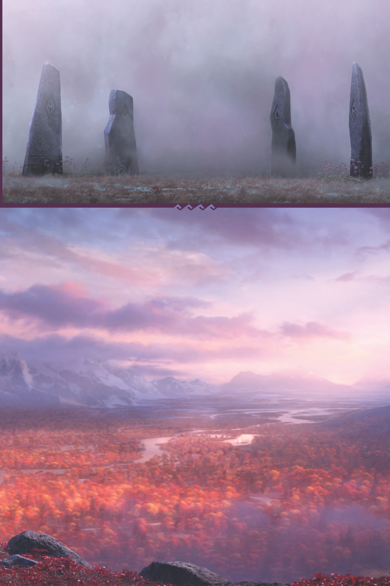
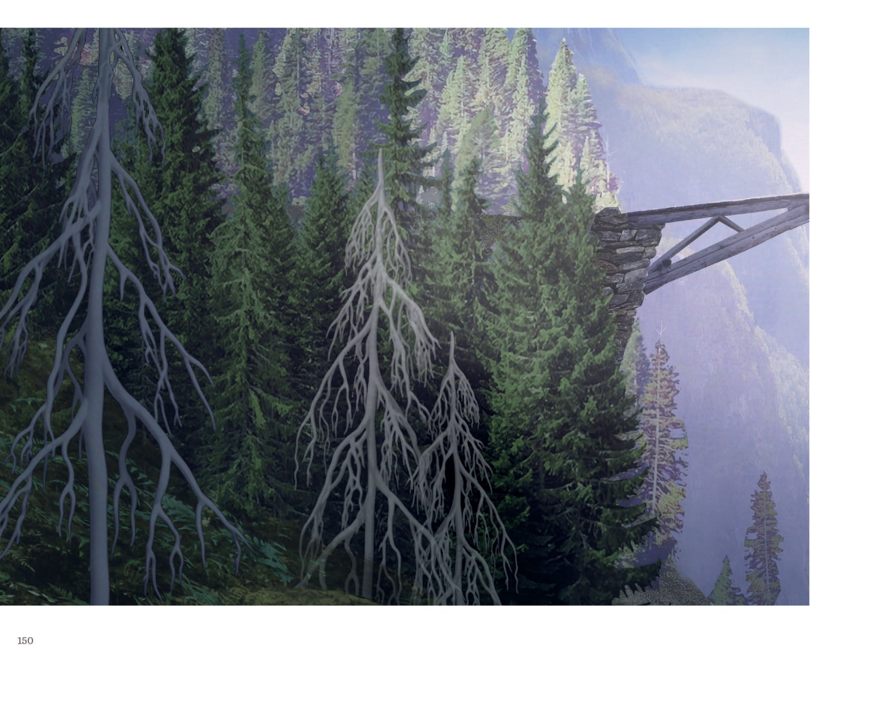
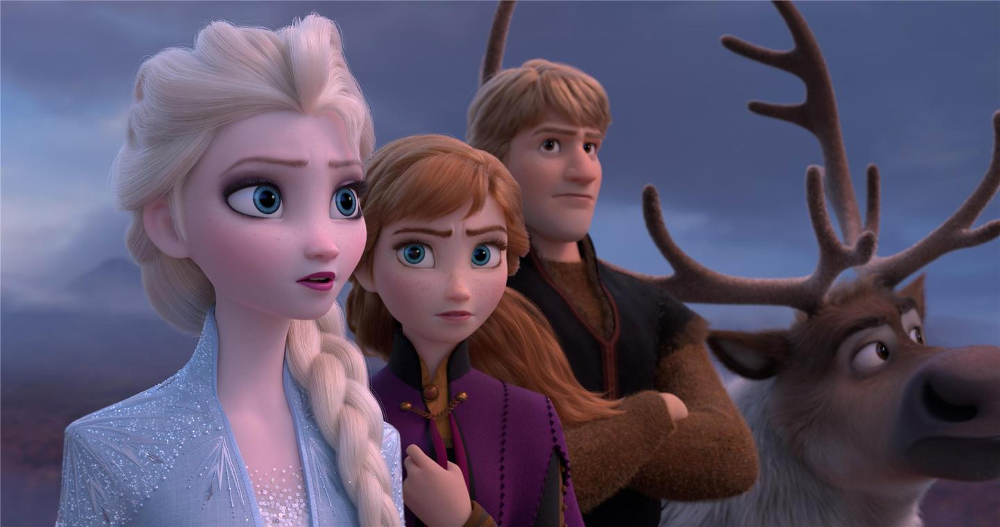
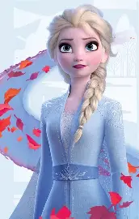

魔法森林 Enchanted Forest

包围森林的雾之穹顶，带微妙彩色（各元素代表色）（来源：《The Art of Frozen II》[p.068][p.069]）
📄 概览与地理
魔法森林位于阿伦黛尔以北（"North of Norway"），是一片被自然之灵与北境民族共同栖居的茂密魔法林地 （来源：Disney Wiki）。美术指导 David W. K. Giaimo 描述其「filled with foliage, but underscored in magic… entirely surrounded by a wall of mist… deep layers of atmosphere filled with mystery」 （来源：《Frozen 2 The Official Movie Special》[ch.50]）。不同地点呈现不同样貌，森林几乎成为「角色」本身；秋季白桦、橙红灌木、紫雾与丁达尔光交织 （来源：《The Art of Frozen II》[p.064][p.065][p.067]）。树种参考真实树种（杨/桦/松/槭等）重塑为 Eyvind Earle 风格剪影，并咨询挪威植物学家以确保色彩准确 （来源：《The Art of Frozen II》[p.070][p.071]）。其灵感被部分资料认为源自《睡美人》中的森林 （来源：Disney Wiki，注记「citation needed」——待考证）。

秋日森林概念图：风灵盖尔卷起漫天红叶，丁达尔光穿透紫雾与白桦剪影（来源：《The Art of Frozen II》[p.063]）
📄 雾之穹顶 The Mist Dome
雾之穹顶包围森林、像一道魔法入口；穿越时伴有静电闪烁，但真正的雾（水粒子）却带微妙彩色（各元素代表色，自紫到青）。特效团队做出「飘渺又坚固」、轮廓清晰而不可逾越的屏障；穹顶内部立有四块刻有元素符号的石碑 （来源：《The Art of Frozen II》[p.068][p.069]）。约 34 年前大坝战役后，迷雾落下将北境民族与一批阿伦黛尔士兵隔绝其中，长达三十四年 （来源：Disney Wiki；Frozen II (2019)）。

上：雾中矗立着四块刻有元素符号的石碑；下：森林与大河的秋日鸟瞰，远处雪山环抱（来源：迪士尼官方小说彩色插图）
📄 四大元素之灵
森林由四大元素之灵统治：风（Wind）、土（Earth）、火（Fire）、水（Water），以及连接人界与自然的「第五灵」。各灵对照如下 （来源：《The Art of Frozen II》[p.009][p.014][p.015][p.088][p.104][p.112][p.128][p.164]）：
| 维度 | 风 Wind | 土 Earth | 火 Fire | 水 Water |
|---|---|---|---|---|
| 精灵 | 盖尔 Gale | 地巨灵 Earth Giants | 布鲁尼 Bruni | 诺克 Nokk |
| 形态 | 不拟人，以旋风与落叶显现 | 岩石构成、似从崖面长出的巨灵 | 粉橙小蝾螈 | 由水构成的马 |
| 灵感 | 北欧民间故事 | 冰河时代巨石 + 山怪（亦借鉴《冰雪奇缘》山精） | 燃烧木材跑出的蝾螈 | 古 Norse 神话中的水灵 |
地巨灵（Earth Giants）是唯一以「群体」而非单一个体呈现的元素之灵；其设计借鉴了《冰雪奇缘》活石谷的山精，也呼应北欧神话中的巨人（Jötunn） （来源：Disney Wiki）。它们通常夜间游荡、白昼在湍急河边休眠，其沉睡态宛如岩石山峰 （来源：Disney Wiki）。
📄 断桥与暗道
断桥（The Broken Bridge）是森林中的诡异场景：无叶白化巨树、废弃石木断桥与深谷瀑布 （来源：《The Art of Frozen II》[p.154]）。此外，秘密通道「地灵通道（Earth Giant's Passage）」连通城堡冰室至瀑布悬崖，可穿 Arenfjord 水底抵达船墓（ship graveyard） （来源：《Forest of Shadows》）。

断桥（The Broken Bridge）：无叶白化巨树与废弃石木断桥横跨深谷瀑布（来源：《The Art of Frozen II》[p.150]）
父母伊杜娜与阿格纳曾在城堡密室研究北境，密室地图标注黑沙海滩与「the Dark Sea（暗海）」，并写下父王名言「The past has a way of returning.」——直接预指续集的 Northuldra / Dark Sea 线 （来源：《Forest of Shadows》[密室地图]）。

